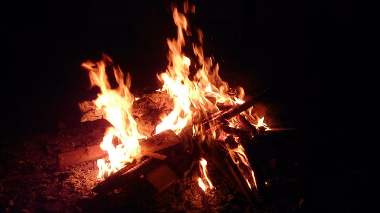

LOHRI
{kind=link}
Lohri, which comes on the last day of Poh (December-January), is another extremely popular festival. A few days before it arrives youngsters get together in groups and go round their localities singing folk-songs connected with Lohri and collecting fuel and money for the bonfire. This is a special day for making offerings to fire. When fire is lit up in the evening, orthodox men and women go round it, pour offerings into it, and bow before it in reverence. The first Lohri for a new bride, or a new-born babe, is enthusiastically celebrated, and sweets are distributed.One of the stories behind the celebration of this festival goes like this;
Somewhere between Gujaranwala and Sialkot in Pakistan now, there was a thick forest called Rakh. There used to live a Muslim Dacoit named Dulla Bhatti, the Robinhood of Punjab. He was brave, generous and provided maximum help to everyone in distress. During the reign of Jahangir, a middle class Hindu who was a jealous and a cunning man spread a rumor that his niece was very beautiful and would do credit to muslim harem. On hearing this, the mughal officers wanted to carry her off forcibely. The girls father was extreamly worried and sought the protection of Dulla Bhatti. Dulla at once got her married to a young Hindu boy at a simple ceremony in the forest.
Celebrate Lohri 2011 on January 13th, Thursday Lohri, is celebrated every year on 13th of January. It is a festival to worship fire. Lohri Festival is celebrated with great pomp in North India. At this time Earth starts moving towards the sun marking the auspicious period of Uttarayan. First Lohri is very important for the newly wed and the new born babies as it marks fertility. At night, people gather around the bonfire and throw til, puffed rice & popcorns into the flames of the bonfire. Prayers are offered to the bonfire seeking abundance & prosperity. People make merry by dancing & singing traditional folk songs
The History of Lohri
the history of Lohri, a seasonal festival of North India is as old as that of story of Indus Valley civilization itself. The Festival of Lohri marks the beginning of the end of winter and the coming of spring and the new year. The fires lit at night, the hand warming, the song and dance and the coming together of an otherwise atomized community, are only some of the features of this festival. The Lohri of north India coincides with Pongal in Tamil Nadu, Makar Sankranti in Bengal, Magha Bihu in Assam, Tai Pongal in Kerala, all celebrated on the auspicious day of Makar Sankranti.
There are some interesting socio-cultural and folk-legends connected with Lohri. According to the cultural history of Punjab, Bhatti, a Rajput tribe during the reign of Akbar, inhabited parts of Rajasthan, Punjab, and Gujarat (now in Pakistan). Dulla Bhatti, Raja of Pindi Bhattian, was put to death by the Mughal king for revolting against him. The tribal mirasis (street singers) trace the history of the tribe and interestingly, claim Maharaja Ranjit Singh as one of its scions.
Dulla Bhatti, like Robin Hood, robbed the rich and gave to the poor. The people of the area loved and respected him. He once rescued a girl from kidnappers and adopted her as his daughter. His people would remember their hero every year on Lohri. Groups of children moved from door to door, singing the Dulla Bhatti folk-song: "Dulla Bhatti ho! Dulle ne dhi viyahi ho! Ser shakar pai ho!" (Dulla gave his daughter a kilo of sugar as a marriage gift).
Lohri is essentially a festival dedicated to fire and the sun god. It is the time when the sun transits the zodiac sign Makar (Capricorn), and moves towards the north. In astrological terms, this is referred to as the sun becoming Uttarayan. The new configuration lessens the ferocity of winter, and brings warmth to earth. It is to ward off the bitter chill of the month of January that people light bonfires, dance around it in a mood of bonhomie and celebrate Lohri.
Fire is associated with concepts of life and health. Fire, like water, is a symbol of transformation and regeneration. It is the representative of the sun, and is thus related, on the one hand with rays of light, and on the other with gold. It is capable of stimulating the growth of cornfields and the well being of man and animals. It is the imitative magic purporting to assure the supply of light and heat. It is also an image of energy and spiritual strength. That is why the Lohri fire gets sanctified and is venerated like a deity. On this occasion, people offer peanuts, popcorn and sweets made of til- chirva, gajak and revri – to propitiate fire as a symbol of the sun god .
Origin of Lohri
Lohri Festival The origin of the Lohri can be traced back to the tale of Dulla Bhatti. By the end of the first week of January, small groups of boys ring the doorbell of houses and start chanting the Lohri songs related to Dulla Bhatti. In turn, the people give them popcorn, peanuts, crystal sugar, sesame seeds (til) or gur as well as money. Turning them back empty-handed is regarded inauspicious. Lohri marks the end of winter on the last day of Paush, and beginning of Magha (around January 12 and 13), when the sun changes its course. It is associated with the worship of the sun and fire and is observed by all communities with different names, as Lohri is an exclusively Punjabi festival. The questions like When it began and why is lost in the mists of antiquity.
The origin of Lohri is related to the central character of most Lohri songs is Dulla Bhatti, a Muslim highway robber who lived in Punjab during the reign of Emperor Akbar. Besides robbing the rich, he rescued Hindu girls being forcibly taken to be sold in slave market of the Middle East. He arranged their marriages to Hindu boys with Hindu rituals and provided them with dowries. Understandably, though a bandit, he became a hero of all Punjabis. So every other Lohri song has words to express gratitude to Dulla Bhatti.
Some believe that Lohri has derived its name from Loi, the wife of Sant Kabir, for in rural Punjab Lohri is pronounced as Lohi. Others believe that Lohri comes from the word 'loh', a thick iron sheet tawa used for baking chapattis for community feasts. Another legend says that Holika and Lohri were sisters. While the former perished in the Holi fire, the latter survived. Eating of til (sesame seeds) and rorhi (jaggery) is considered to be essential on this day. Perhaps the words til and rorhi merged to become tilorhi, which eventually got shortened to Lohri.
Ceremonies that go with the festival of Lohri usually comprises of making a small image of the Lohri goddess with gobar (cattle dung), decorating it, kindling a fire beneath it and chanting its praises. The final ceremony is to light a large bonfire at sunset, toss sesame seeds, gur, sugar-candy and rewaries in it, sit round it, sing, dance till the fire dies out. People take dying embers of the fire to their homes. In Punjabi village homes, fire is kept going round the clock by use of cow-dung cakes
Harvest Festival of Punjab
Lohri is the harvest festival of Punjab, famously known as the the breadbasket state of India. Thus, people residing in Punjab attach a great significance to Lohri, the festival in feasts and foods. This harvest festival is celebrated to mark both celebration and sharing.
Lohri festival prompts people to be thankful for God's provision and to celebrate his creation, its focus on farming.
In Punjab, wheat is the main winter crop, which is sown in October and harvested in March or April. In January, the fields come up with the promise of a golden harvest, and farmers celebrate Lohri during this rest period before the cutting and gathering of crops. For Punjabis, this is more than just a festival, it is also an example of a way of life.
Customs and Traditions of Lohri
The various customs and traditions attached to the festival of Lohri signifies the harvesting of the Rabi crops. The people of Northern India, especially Punjab and Haryana celebrate Lohri, to mark the end of winter. Harvested fields and front yards are litup with flames of bonfires, around which people gather to meet friends and relatives and sing folk songs. For Punjabis, this is more than just a festival; it is also an example of their love for celebrations. Lohri celebrates fertility and the joy of life. People gather around bonfires, throw sweets, puffed rice and popcorn into the flames, sing popular and folksongs and exchange greetings.
In the morning, children go from door to door singing songs in praise of Dulha Bhatti, a Punjabi version of Robin Hood who robbed from the rich and helped the poor. These visitors are usually given money as they knock on their neighbor’s doors. In the evening, people gather around bonfires, throw sweets, puffed rice, and popcorn into the flames, sing popular folk songs and exchange greetings.
He lit the sacred fire in keeping with the Hindu custom. Since there was no priest to chant the holy mantras, he broke into a hiliarious song composed extepore to add chear to the occasion. This song is sung even today on the occasion.The song goes
Sunder mundriye Ho Tera kaun bachera Ho Dhulla bhatti wala Ho Dulle dhi vaiahi Ho Ser Shakar Pai Ho Kudi de boje pai Ho Kudi da lal pataka Ho Kudi da salu pata Ho Salu kaun samete Ho Chacha gal dese Ho Chache churi kuti Ho Jimindara luti Ho Jimindara sado Ho Gin gin paule lao Ho Ik paula reh gaya Sepai fadh kei lai gaya Sepai ne mari it